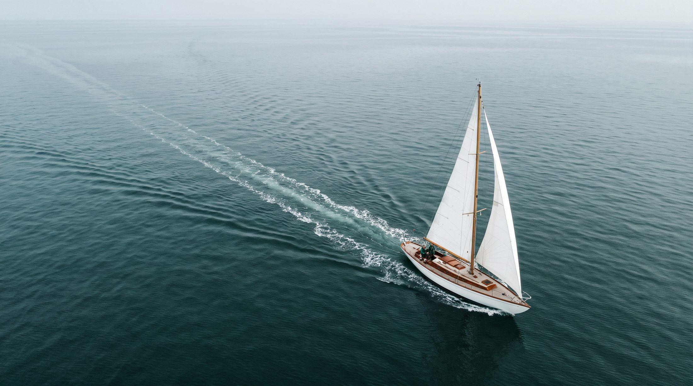
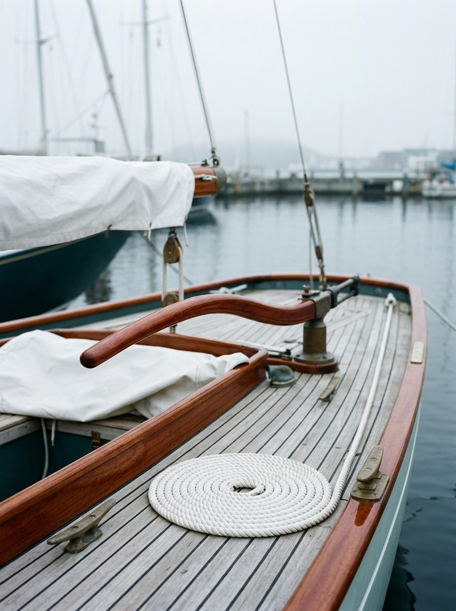
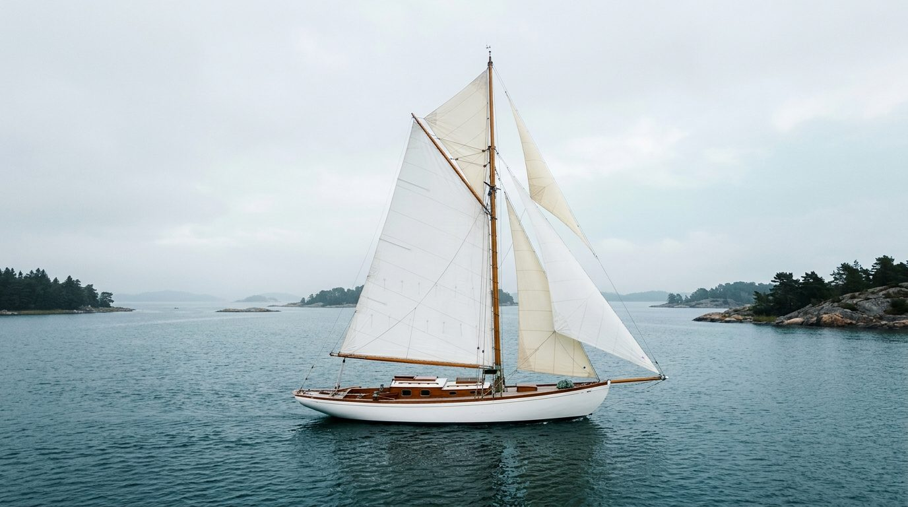
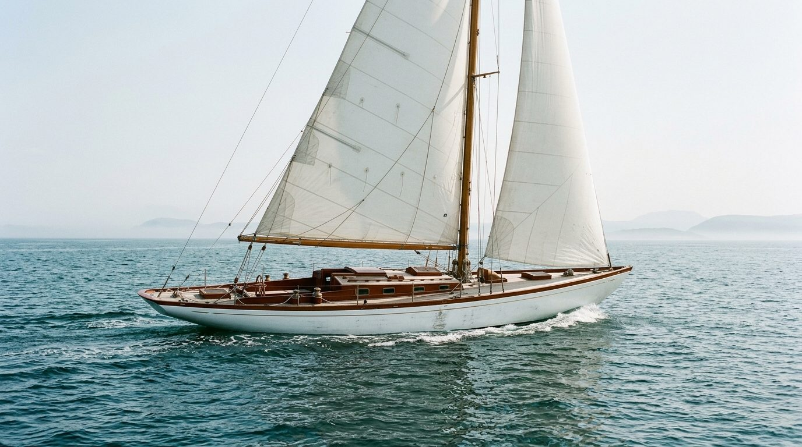
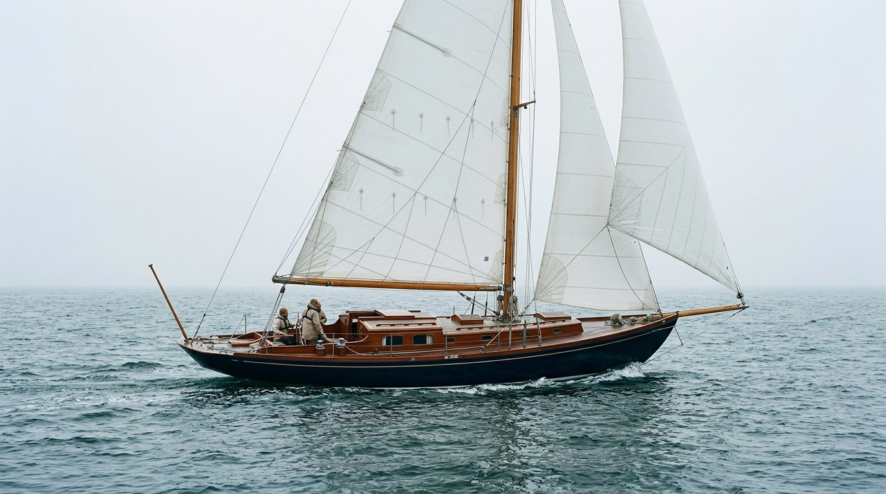
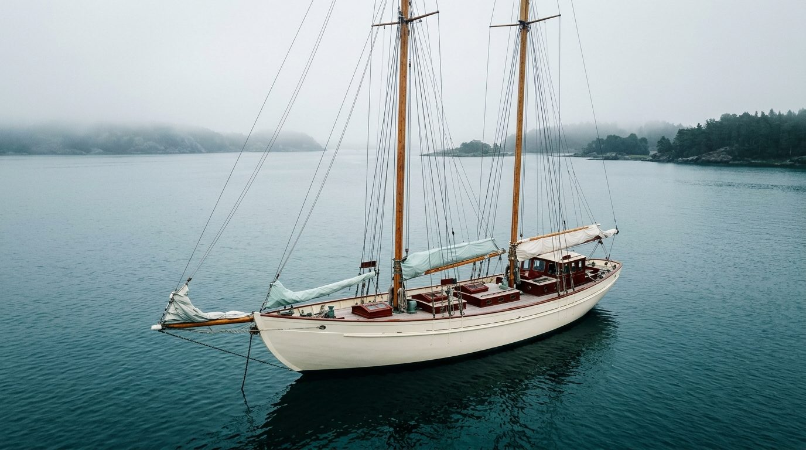
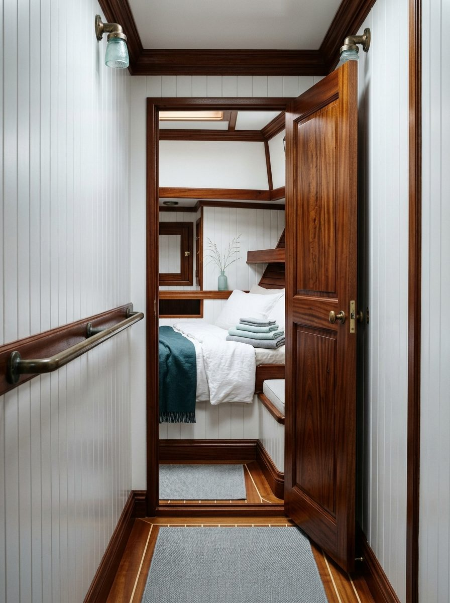

Let your yacht cover its own upkeep, with Halyard at hand
Week charters of a classic yacht, run from A to Z, in complete peace of mind.
Talk to Halyard
The charter week,
done properly
A well-run charter season is the surest way to pay for a wooden yacht without sailing it into the ground.
Halyard takes care of every part: photography, pricing, guests, skippers, linen, cleaning and the repairs no one else notices.

Svala
A white-hulled sloop drawn in 1938 and relaunched by our shed two winters ago. Svala is known for a deep cockpit, a saloon lit by its original skylight and a helm as light as a dinghy’s. Four berths, standing headroom and a teak deck that has never been sanded thin. A rare yacht, well suited to unhurried charter weeks among the islands.
- TypeWeek charter
- Average stay6 nights
- Length13.4 m
- Weeks sailed last summer15
Where Halyard
makes the difference
Charter management, run by Halyard
Classic charter listing, on your own




Our yachts
under charter
Every yacht is photographed, surveyed and followed with the same care, week after week.
Talk to HalyardListed with
the right houses
Presence with several charter houses keeps the summer full and gives the shoulder weeks a fair wind.
The Halyard promise: you only sail
With Halyard, your yacht is fully looked after, with nothing asked of you. We handle every detail: daily pricing, listings, photography, guest messages, handovers, linen and cleaning, together with repairs and the follow-up of each week.
Everything is checked, planned and carried out by our own crew, so the standard on board never depends on luck.
You do nothing.
You sail your weeks.
